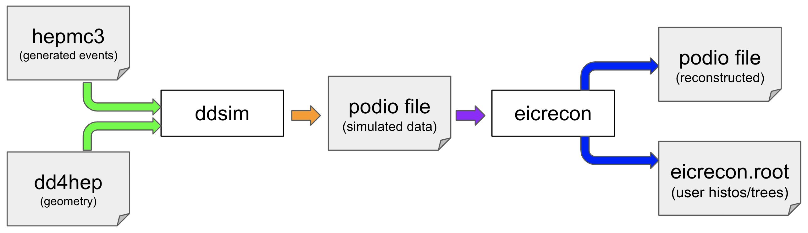
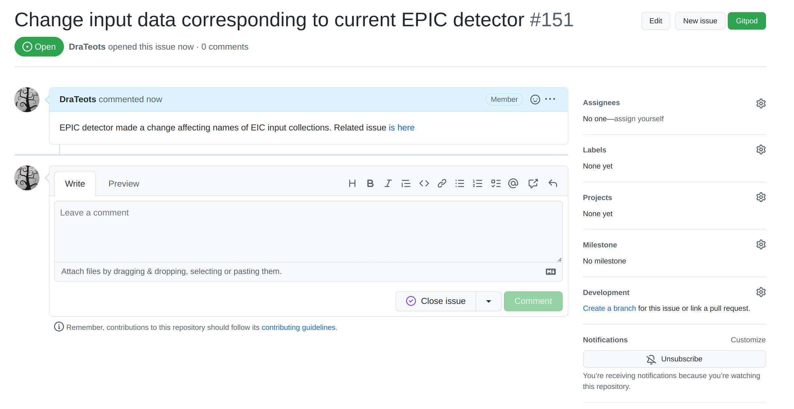
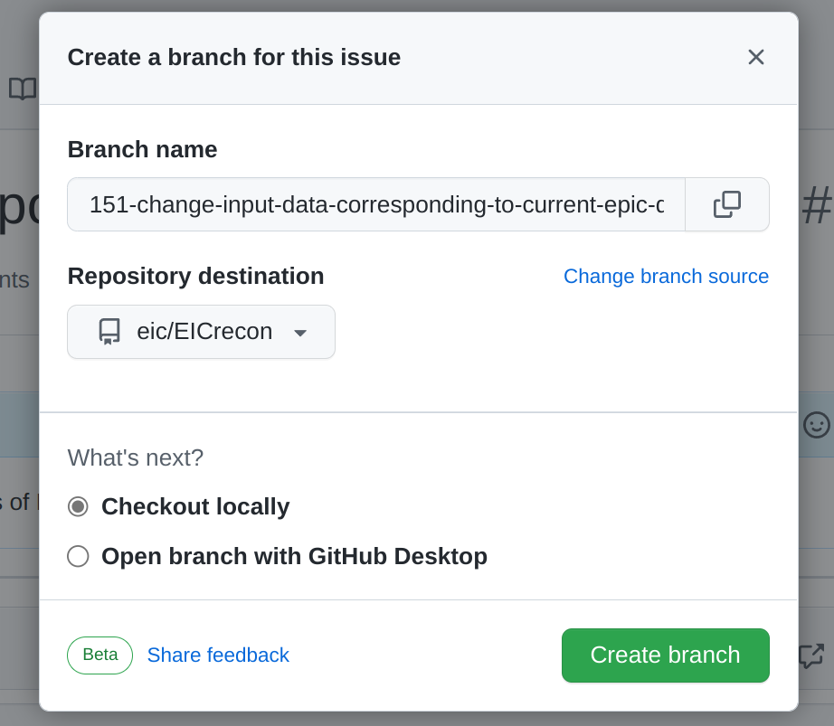
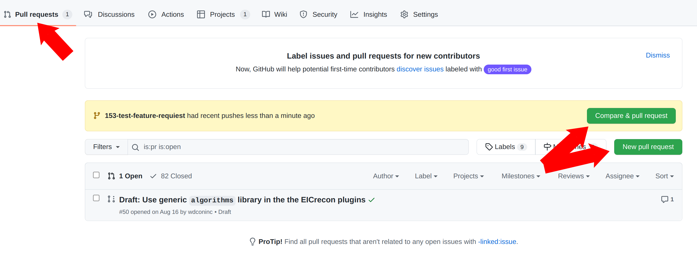
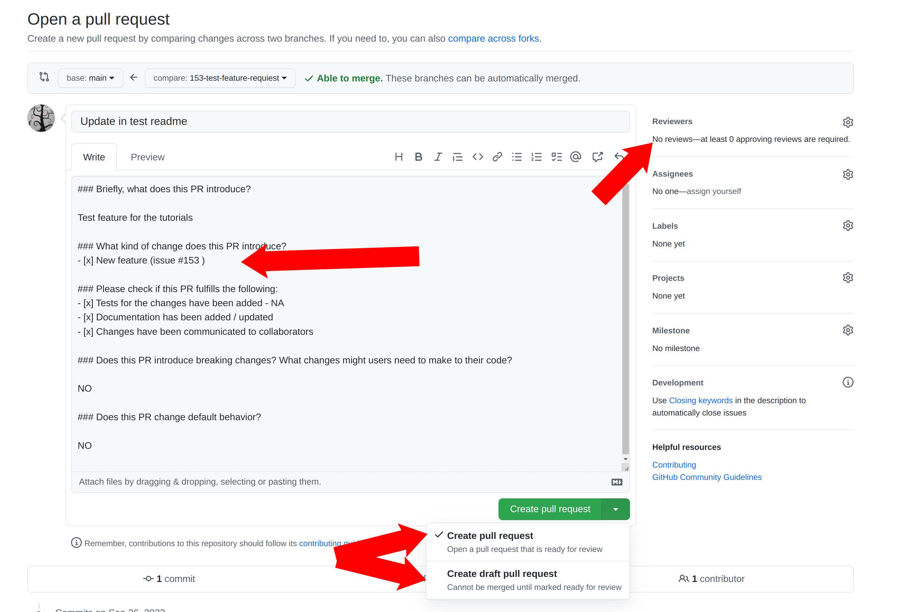

All in One View
Content from Introduction
Last updated on 2026-07-10 | Edit this page
Estimated time: 5 minutes
Overview
Questions
- Where does EICrecon fit into the ePIC software ecosystem?
Objectives
- Understand scope of tutorial and how EICrecon fits into larger software ecosystem.
In this episode we will introduce EICrecon and show where it fits into the ePIC software stack. We will briefly cover the scope of this tutorial and functionality will be covered.

- EICrecon is the reconstruction piece of ePIC software.
Content from Work Environment for ePIC Reconstruction Software
Last updated on 2026-07-10 | Edit this page
Estimated time: 20 minutes
Overview
Questions
- How do I setup a development copy of the EICrecon repository?
Objectives
- Clone EICrecon repository and build with eic-shell.
- Obtain a simulated data file.
How do I setup development copy for EICrecon?
A development copy includes a working directory and the EICrecon
code. By far, the easiest way to set this up is using
eic-shell as outlined in the Setting up
your environment tutorial.
Although eic-shell comes with a prebuilt copy of
EICrecon (eicrecon), we will clone the EICrecon repository
so we can modify it and submit changes back to GitHub later:
or, if you have SSH keys set up on github
Check that you can build EICrecon using the packages in
eic-shell (this may take a while…):
If you are not familiar with cmake, the first command above
(cmake -S . -B build) will create a directory
build and place files there to drive the build of the
project in the source directory . (i.e. the current
dirctory). The second cmake command
(cmake --build build --target install) actually performs
the build and installs the compiled plugins, exectuables, etc.
Exercise
- Use the commands above to setup your working directory and build EICrecon.
After cmake --build build --target install finishes, you
should have an EICrecon/build directory and an installed
eicrecon executable together with an
EICrecon/bin/eicrecon-this.sh environment script. The build
completes without errors (it may take several minutes).
How do I run EICrecon?
eicrecon is the main reconstruction executable. To run
it though, you should add it to your PATH and set up any
other environment parameters needed. Do this by sourcing the
eicrecon-this.sh file that should have been created and
installed into the bin directory in the previous step. Once
you have done that, run eicrecon with no arguments to see
that it is found and prints the usage statement.
Note: If you are using the prebuilt eicrecon executable
in eic-shell, the environment will aready be set.
Now you should be able to run the eicrecon command, and
without options it will give information on how to run it:
BASH
$ eicrecon
Usage:
eicrecon [options] source1 source2 ...
Description:
Command-line interface for running JANA plugins. This can be used to
read in events and process them. Command-line flags control configuration
while additional arguments denote input files, which are to be loaded and
processed by the appropriate EventSource plugin.
Options:
-h --help Display this message
-v --version Display version information
-j --janaversion Display JANA version information
-c --configs Display configuration parameters
-l --loadconfigs <file> Load configuration parameters from file
-d --dumpconfigs <file> Dump configuration parameters to file
-b --benchmark Run in benchmark mode
-L --list-factories List all the factories without running
-Pkey=value Specify a configuration parameter
-Pplugin:param=value Specify a parameter value for a plugin
--list-default-plugins List all the default plugins
--list-available-plugins List plugins at $JANA_PLUGIN_PATH and $EICrecon_MY
Example:
eicrecon -Pplugins=plugin1,plugin2,plugin3 -Pnthreads=8 infile.root
eicrecon -Ppodio:print_type_table=1 infile.rootThe usage statement gives several command line options. Two of the
most important ones are the -l and -Pkey=value
options. Both of these allow you to set configuration
parameters in the job. These are how you can modify the behavior of
the job. Configuration parameters will pretty much always have default
values set by algorithm authors so it is often not necessary to set this
yourself. If you need to though, these are how you do it.
- Use the
-Pkey=valueform if you want to set the value directly on the command line. You may pass mutiple options like this. - The
-loption is used to specify a configuration file where you may set a large number of values. The file format is one parameter per line with one or more spaces separating the configuration parameter name and its value. Empty lines are OK and#can be used to specify comments.
Get a simulated data file
The Simulations with npsim and Geant4 tutorial described how to generate a simulated data file. If you followed the exercises in that tutorial you can use a file you generated there. If not, then you can quickly generate a small file with the following command:
BASH
ddsim -N 100 \
--compactFile $DETECTOR_PATH/$DETECTOR_CONFIG.xml \
--outputFile pythia8NCDIS_10x100_minQ2=1_beamEffects_xAngle=-0.025_hiDiv.edm4hep.root \
--inputFile root://dtn-eic.jlab.org//volatile/eic/EPIC/EVGEN/DIS/NC/10x100/minQ2=1/pythia8NCDIS_10x100_minQ2=1_beamEffects_xAngle=-0.025_hiDiv_1.hepmc3.tree.rootNote: The backslash characters, \, allow the line to be
continued on the next line.
eicrecon processes the events in the file and prints
progress to the terminal, finishing without errors. By default no output
file is written; the next section shows how to request output
collections.
Generating a podio output file
To write reconstructed values to an output file, you need to tell eicrecon what to write. There are several options available, but the mosrt useful one is podio:output_collections. This is a comma separated list of colelctions to write to the output file. For example:
BASH
eicrecon -Ppodio:output_collections=ReconstructedParticles pythia8NCDIS_10x100_minQ2=1_beamEffects_xAngle=-0.025_hiDiv.edm4hep.rootTo see a list of possible collections, run
eicrecon -L.
Exercise
- Use
eicreconto generate an output file with bothReconstructedParticlesandEcalEndcapNRawHits.
- Use eicrecon executable to run reconstruction on a podio input file and to create podio output file.
Content from Creating a plugin to make custom histograms/trees
Last updated on 2026-07-10 | Edit this page
Estimated time: 35 minutes
Overview
Questions
- Why should a I make a custom plugin?
- How do I create a custom plugin?
Objectives
- Understand when one should make a plugin and when they should just use a ROOT macro.
- Understand how to create a new, stand-alone plugin with your own custom histograms.
Note: The following episode presents a somewhat outdated view, and
some commands may not function. In particular, the
eicmkplugin.py helper script used below is no
longer shipped with the eic-shell container /
EICrecon, so the eicmkplugin.py myFirstPlugin step
will not work as written. For the current, supported way to create and
build an EICrecon plugin, follow the plugin documentation in the EICrecon repository.
If you are only interested in analyzing already-reconstructed data, then there is no requirement to use a plugin as described below; just analyze output ROOT file directly instead.
Plugins are the basic building blocks when it comes to analyzing data. They request objects and perform actions, such as making histograms, or writing out certain objects to files. When your plugin requests objects (e.g. clusters) the factory responsible for the requested object is loaded and run (We will dive into factories in the next exciting episode of how to use JANA). When running EICrecon you will configure it to use some number of plugins (each potentially with their own set of configuration parameters). Now, let us begin constructing a new plugin.
To do this we will use the eicmkplugin.py script that comes with EICrecon. This utility should be your “go-to” for jumpstarting your work with EICrecon/JANA when it comes to data. To put eicmkplugin.py in your path, you can do the following:
The eickmkplugin script can be called simply by typing: “eicmkplugin.py” followed by the name of the plugin. Let’s begin by calling:
You should now have terminal output that looks like this:
OUTPUT
Writing myFirstPlugin/CMakeLists.txt ...
Writing myFirstPlugin/myFirstPluginProcessor.h ...
Writing myFirstPlugin/myFirstPluginProcessor.cc ...
Created plugin myFirstPlugin.
Build with:
cmake -S myFirstPlugin -B myFirstPlugin/build
cmake --build myFirstPlugin/build --target installThere should now exist a new folder labeled “myPlugin”. That directory contains 2 files: a CMakelists.txt file (needed for compiling our new plugin) and the source code for the plugin itself.
Inside the source code for your plugin is a fairly simple class. The private data members should contain the necessary variables to successfully run your plugin; this will likely include any histograms, canvases, fits or other accoutrement. The public section contains the required Constructor, Init, Process, and Finish functions. In init we get the application, as well as initialize any variables or histograms, etc. The Process function typically gets objects from the event and does something with them (e.g. fill the histogram of cluster energy). And finally Finish is called where we clean up and do final things before ending the run of our plugin.
Before we compile our plugins we need to tell JANA about where the plugins will be found. Start by setting your EICrecon_MY environment variable to a directory where you have write permission. The build instructions will install the plugin to that directory. When eicrecon is run, it will also look for plugins in the $EICrecon_MY directory and the EICrecon build you are using. This step is easy to overlook but necessary for the plugin to be found once compiled. Let’s do this now before we forget:
To compile your plugin, let’s follow the guidance given and type:
BASH
cmake -S myFirstPlugin -B myFirstPlugin/build
cmake --build myFirstPlugin/build --target installYou can test plugin installed and can load correctly by runnign eicrecon with it:
The second plugin, JTest, just supplies dummy events, ensuring your plugin is properly compiled and found. To generate your first histograms, let’s edit the myFirstPluginProcessor.cc and myFirstPluginProcessor.h files (located in the myFirstPlugin directory). Start by modifying myFirstPluginProcessor.h. In the end it should look similar to the one below:
CPP
#include <JANA/JEventProcessorSequentialRoot.h>
#include <TH2D.h>
#include <TFile.h>
#include <edm4hep/SimCalorimeterHit.h>
class myFirstPluginProcessor: public JEventProcessorSequentialRoot {
private:
// Data objects we will need from JANA e.g.
PrefetchT<edm4hep::SimCalorimeterHit> rawhits = {this, "EcalBarrelHits"};
// Declare histogram and tree pointers here. e.g.
TH1D* hEraw = nullptr;
public:
myFirstPluginProcessor() { SetTypeName(NAME_OF_THIS); }
void InitWithGlobalRootLock() override;
void ProcessSequential(const std::shared_ptr<const JEvent>& event) override;
void FinishWithGlobalRootLock() override;
};Next, edit the myFirstPluginProcessor.cc file to the following:
CPP
#include "myFirstPluginProcessor.h"
#include <services/rootfile/RootFile_service.h>
// The following just makes this a JANA plugin
extern "C" {
void InitPlugin(JApplication *app) {
InitJANAPlugin(app);
app->Add(new myFirstPluginProcessor);
}
}
//-------------------------------------------
// InitWithGlobalRootLock
//-------------------------------------------
void myFirstPluginProcessor::InitWithGlobalRootLock(){
// This ensures the histograms created here show up in the same root file as
// other plugins attached to the process. Place them in dedicated directory
// to avoid name conflicts.
auto rootfile_svc = GetApplication()->GetService<RootFile_service>();
auto rootfile = rootfile_svc->GetHistFile();
rootfile->mkdir("myFirstPlugin")->cd();
hEraw = new TH1D("Eraw", "BEMC hit energy (raw)", 100, 0, 0.075);
}
//-------------------------------------------
// ProcessSequential
//-------------------------------------------
void myFirstPluginProcessor::ProcessSequential(const std::shared_ptr<const JEvent>& event) {
for( auto hit : rawhits() ) hEraw->Fill( hit->getEnergy() );
}
//-------------------------------------------
// FinishWithGlobalRootLock
//-------------------------------------------
void myFirstPluginProcessor::FinishWithGlobalRootLock() {
// Do any final calculations here.
}Before we continue, stop for a moment and remember that plugins are compiled objects. Thus it is imperative we rebuild our plugin after making any changes. To do this, we can simply run the same commands we used to build the plugin in the first place:
BASH
cmake -S myFirstPlugin -B myFirstPlugin/build
cmake --build myFirstPlugin/build --target installYou can test the plugin using the following simulated data file:
BASH
wget https://eicaidata.s3.amazonaws.com/2022-09-26_ncdis10x100_minq2-1_200ev.edm4hep.root
eicrecon -Pplugins=myFirstPlugin 2022-09-26_ncdis10x100_minq2-1_200ev.edm4hep.rootYou should now have a root file, eicrecon.root, with a single directory: “myFirstPlugin” containing the resulting hEraw histogram.
Exercises
As exercises try (make sure you rebuild everytime you change your plugin):
- Plot the X,Y positions of all the hits.
- Repeat only for hits with energy greater than 0.005 GeV.
- Try to plot similar histograms from the EcalEndcapN.
Feel free to play around with other objects and their properties
(hint: when you ran eicrecon, you should have seen a list of all the
objects that were available to you. You can also see this list by
typing:
eicrecon -Pplugins=myFirstPlugin -Pjana:nevents=0)
For the X,Y positions, declare a TH2D in the header,
book it in InitWithGlobalRootLock, and fill it from
hit->getPosition().x and
hit->getPosition().y in ProcessSequential.
Add an if (hit->getEnergy() > 0.005) guard to make
the energy-cut version. To switch detectors, change the
PrefetchT collection name from
"EcalBarrelHits" to "EcalEndcapNHits". Rebuild
the plugin after every change with the two cmake commands
above.
Note: very shortly you will be adding a factory. After you do come back to this plugin and access your newly created objects.
- Plugins can be used to generate custom histograms by attaching directly to the reconstruction process.
- Plugins can be used for monitoring or custom analysis.
Content from Creating or modifying a JANA factory in order to implement a reconstruction algorithm
Last updated on 2026-07-10 | Edit this page
Estimated time: 35 minutes
Overview
Questions
- How to write a reconstruction algorithm in EICrecon?
Objectives
- Learn how to create a new factory in EICrecon that supplies a reconstruction algorithm for all to use.
- Understand the directory structure for where the factory should be placed in the source tree.
- Understand how to use a generic algorithm in a JANA factory.
Note: The following episode presents a somewhat outdated view, and some commands may not function. If you are only interested in analyzing already-reconstructed data, then there is no requirement to use a plugin as described below; the output ROOT file works too.
Introduction
Now that you’ve learned about JANA plugins and JEventProcessors, let’s talk about JFactories. JFactories are another essential JANA component just like JEventProcessors and JEventSources. While JEventProcessors are used for aggregating results from each event into a structured output such as a histogram or a file, JFactories are used for computing those results in an organized way.
When do I use a JFactory?
- If you have an input file and need to read data model objects from it, use a JEventSource.
- If you have an output file (or histogram) and wish to write data model objects to it, use a JEventProcessor.
- If you have some data model objects and wish to produce a new data model object, use a JFactory.
Why should I prefer writing a JFactory?
They make your code reusable. Different people can use your results later without having to understand the specifics of what you did.
If you are consuming some data which doesn’t look right to you, JFactories make it extremely easy to pinpoint exactly which code produced this data.
EICrecon needs to run multithreaded, and using JFactories can help steer you away from introducing thorny parallelism bugs.
You can simply ask for the results you need and the JFactory will provide it. If nobody needs the results from the JFactory, it won’t be run. If the results were already in the input file, it won’t be run. If there are multiple consumers, the results are only computed once and then cached. If the JFactory relies on results from other JFactories, it will call them transparently and recursively.
When do I create my own plugin?
- If you are doing a one-off prototype, it’s fine to just use a ROOT macro.
- If you are writing code you’ll probably return to, we recommend putting the code in a standalone (i.e. outside of the EICrecon source tree) plugin.
- If you are writing code other people will probably want to run, we recommend adding your plugin to the EICrecon source tree.
- If you are writing a JFactory, we recommend adding it to the EICrecon source tree, either to an existing plugin or to a new one.
Algorithms vs Factories
In general, a Factory is a programming pattern for constructing objects in an abstract way. Oftentimes, the Factory is calling an algorithm under the hood. This algorithm may be very generic. For instance, we may have a Factory that produces Cluster objects for a barrel calorimeter, and it calls a clustering algorithm that doesn’t care at all about barrel calorimeters, just the position and energy of energy of each CalorimeterHit object. Perhaps multiple factories for creating clusters for completely different detectors are all using the same algorithm.
Note that Gaudi provides an abstraction called “Algorithm” which is essentially its own version of a JFactory. In EICrecon, we have been separating out generic algorithms from the old Gaudi and new JANA code so that these can be developed and tested independently. To see an example of how a generic algorithm is being implemented, look at these examples:
src/detectors/EEMC/RawCalorimeterHit_factory_EcalEndcapNRawHits.h
src/algorithms/calorimetry/CalorimeterHitDigi.h
src/algorithms/calorimetry/CalorimeterHitDigi.ccUsing generic algorithms makes things slightly more complex. However, the generic algorithms can be recycled for use in multiple detector systems which adds some simplification.
Parallelism considerations
JEventProcessors observe the entire event stream, and require a critical section where only one thread is allowed to modify a shared resource (such as a histogram) at any time. JFactories, on the other hand, only observe a single event at a time, and work on each event independently. Each worker thread is given an independent event with its own set of factories. This means that for a given JFactory instance, there will be only one thread working on one event at any time. You get the benefits of multithreading without having to make each JFactory thread-safe.
You can write JFactories in an almost-functional style, but you can
also cache some data on the JFactory that will stick around from
event-to-event. This is useful for things like conditions and geometry
data, where for performance reasons you don’t want to be doing a deep
lookup on every event. Instead, you can write callbacks such as
BeginRun(), where you can update your cached values when
the run number changes.
Note that just because the JFactory can be called in
parallel doesn’t mean it always will. If you call event->Get() from
inside JEventProcessor::ProcessSequential, in particular,
the factory will run single-threaded and slow everything down. However,
if you call it using Prefetch instead, it will run in
parallel and you may get a speed boost.
How do I use an existing JFactory?
Using an existing JFactory is extremely easy! Any time you are
someplace where you have access to a JEvent object, do
this:
CPP
auto clusters = event->Get<edm4eic::Cluster>("EcalEndcapNIslandClusters");
for (auto c : clusters) {
// ... do something with a cluster
}As you can see, it doesn’t matter whether the Cluster
objects were calculated from some simpler objects, or were simply loaded
from a file. This is a very powerful concept.
One thing we might want to do is to swap one factory for another, possibly even at runtime. This is easy to do if you just make the factory tag be a parameter:
How do I create a new JFactory?
We are going to add a new JFactory inside EICrecon.
src/detectors/EEMC/Cluster_factory_EcalEndcapNIslandClusters.h:
CPP
#pragma once
#include <edm4eic/Cluster.h>
#include <JANA/JFactoryT.h>
#include <services/log/Log_service.h>
class Cluster_factory_EcalEndcapNIslandClusters : public JFactoryT<edm4eic::Cluster> {
public:
Cluster_factory_EcalEndcapNIslandClusters(); // Constructor
void Init() override;
// Gets called exactly once at the beginning of the JFactory's life
void ChangeRun(const std::shared_ptr<const JEvent> &event) override {};
// Gets called on events where the run number has changed (before Process())
void Process(const std::shared_ptr<const JEvent> &event) override;
// Gets called on every event
void Finish() override {};
// Gets called exactly once at the end of the JFactory's life
private:
float m_scaleFactor;
std::shared_ptr<spdlog::logger> m_log;
};src/detectors/EEMC/Cluster_factory_EcalEndcapNIslandClusters.cc:
CPP
#include "Cluster_factory_EcalEndcapNIslandClusters.h"
#include <edm4eic/ProtoCluster.h>
#include <JANA/JEvent.h>
Cluster_factory_EcalEndcapNIslandClusters::Cluster_factory_EcalEndcapNIslandClusters() {
SetTag("EcalEndcapNIslandClusters");
}
void Cluster_factory_EcalEndcapNIslandClusters::Init() {
auto app = GetApplication();
// This is an example of how to declare a configuration parameter that
// can be set at run time. e.g. with -PEEMC:EcalEndcapNIslandClusters:scaleFactor=0.97
m_scaleFactor =0.98;
app->SetDefaultParameter("EEMC:EcalEndcapNIslandClusters:scaleFactor", m_scaleFactor, "Energy scale factor");
// This is how you access shared resources using the JService interface
m_log = app->GetService<Log_service>()->logger("EcalEndcapNIslandClusters");
}
void Cluster_factory_EcalEndcapNIslandClusters::Process(const std::shared_ptr<const JEvent> &event) {
m_log->info("Processing event {}", event->GetEventNumber());
// Grab inputs
auto protoclusters = event->Get<edm4eic::ProtoCluster>("EcalEndcapNIslandProtoClusters");
// Loop over protoclusters and turn each into a cluster
std::vector<edm4eic::Cluster*> outputClusters;
for( auto proto : protoclusters ) {
// ======================
// Algorithm goes here!
// ======================
auto cluster = new edm4eic::Cluster(
0, // type
energy * m_scaleFactor,
sqrt(energyError_squared),
time,
timeError,
proto->hits_size(),
position,
edm4eic::Cov3f(), // positionError,
0.0, // intrinsicTheta,
0.0, // intrinsicPhi,
edm4eic::Cov2f() // intrinsicDirectionError
);
outputClusters.push_back( cluster );
}
// Hand ownership of algorithm objects over to JANA
Set(outputClusters);
}We can now fill in the algorithm with anything we like!
CPP
// Grab inputs
auto protoclusters = event->Get<edm4eic::ProtoCluster>("EcalEndcapNIslandProtoClusters");
// Loop over protoclusters and turn each into a cluster
std::vector<edm4eic::Cluster*> outputClusters;
for( auto proto : protoclusters ) {
// Fill cumulative values by looping over all hits in proto cluster
float energy = 0;
double energyError_squared = 0.0;
float time = 1.0E8;
float timeError;
edm4hep::Vector3f position;
double sum_weights = 0.0;
for( uint32_t ihit=0; ihit<proto->hits_size() ; ihit++){
auto const &hit = proto->getHits(ihit);
auto weight = proto->getWeights(ihit);
energy += hit.getEnergy();
energyError_squared += std::pow(hit.getEnergyError(), 2.0);
if( hit.getTime() < time ){
time = hit.getTime(); // use earliest time
timeError = hit.getTimeError(); // use error of earliest time
}
auto &p = hit.getPosition();
position.x += p.x*weight;
position.y += p.y*weight;
position.z += p.z*weight;
sum_weights += weight;
}
// Normalize position
position.x /= sum_weights;
position.y /= sum_weights;
position.z /= sum_weights;
// Create a cluster object from values accumulated from hits above
auto cluster = new edm4eic::Cluster(
0, // type (?))
energy * m_scaleFactor,
sqrt(energyError_squared),
time,
timeError,
proto->hits_size(),
position,
// Not sure how to calculate these last few
edm4eic::Cov3f(), // positionError,
0.0, // intrinsicTheta,
0.0, // intrinsicPhi,
edm4eic::Cov2f() // intrinsicDirectionError
);
outputClusters.push_back( cluster );
}
// Hand ownership of algorithm objects over to JANA
Set(outputClusters);You can’t pass JANA a JFactory directly (because it needs to create
an arbitrary number of them on the fly). Instead you register a
JFactoryGenerator object:
src/detectors/EEMC/EEMC.cc
CPP
// In your plugin's init
#include <JANA/JFactoryGenerator.h>
// ...
#include "Cluster_factory_EcalEndcapNIslandClusters.h"
extern "C" {
void InitPlugin(JApplication *app) {
InitJANAPlugin(app);
// ...
app->Add(new JFactoryGeneratorT<Cluster_factory_EcalEndcapNIslandClusters>());
}Finally, we go ahead and trigger the factory (remember, factories won’t do anything unless activated by a JEventProcessor).
BASH
eicrecon in.root -Ppodio:output_file=out.root -Ppodio:output_collections=EcalEndcapNIslandClusters -Pjana:nevents=10Exercise
Your exercise is to get this JFactory working! You can tweak the algorithm, add log messages, add additional config parameters, etc.
Place the header and source files under
src/detectors/EEMC/, register the factory generator in
EEMC.cc, rebuild EICrecon, and run the
eicrecon command above. A successful run writes
out.root containing the
EcalEndcapNIslandClusters collection and prints the
m_log->info message for each processed event. Experiment
by changing scaleFactor on the command line with
-PEEMC:EcalEndcapNIslandClusters:scaleFactor=0.97.
- Create a factory for reconstructing single subdetector data or for global reconstruction.
Content from Contributing code changes to the EICrecon repository
Last updated on 2026-07-10 | Edit this page
Estimated time: 20 minutes
Overview
Questions
- How do I submit code to the EICrecon repository?
Objectives
- Understand naming conventions for EICrecon.
- Submitting a Pull Request for a contribution to EICrecon.
Repository
We use GitHub as the main code repository tool. The repositories are located:
- EICrecon - EIC reconstruction algorithms and EIC-related code for JANA framework
- JANA2 - The core framework
If you hesitate where to file an issue or a question, then the most probably it should be done in EICrecon project. Use the EICrecon issues tracker to file bug reports and questions.
There is also EICrecon project board where one can see what issues are in work and what could be picked up.
The project board groups issues into columns such as “TODO”, “In Progress”, and “Done”. The “TODO” column lists issues that are ready to be picked up. Any of these is a reasonable starting point for a first contribution.
Contributing workflow
A workflow starts from creating an issue with a bug report or a feature request. It is important to create an issue even if the subject was discussed on a meeting, personally, etc.
-
Then create a branch out of the issue.

Create branch from issue
Create branch from issue -
After you commit and push changes to the branch, create a pull request (PR). As soon as PR is created a continious integration (CI) system will run to test the project compiles and runs on EIC environment. Any further push to this branch will trigger CI rerun the tests and check if merge is ready to be done. PRs are also a good place do discuss changes and code with collaborators. So it might be reasonable to create a PR even if not all work on issue is done. In this case create a Draft PR.

Create branch from issue
Create branch from issueTo summarize:
- Create PR
- Fill the information
- Use “Draft PR” if the work is not done
- Assign a reviewer
Before accepting the Pull Requiest code goes through a code review by one of the core developers. If you need someone particular to review your changes - select the reviewer from the menu. Otherwise one of the developers will review the code and accept the PR.
More on the EIC contribution guide is in the Setting up your environment tutorial, video
Coding style
One can find coding style and other contributins policies at CONTRIBUTING.md. It is yet to be finished but one can find current decisions on coding style there
References
- EICrecon
- EICrecon project board
- EICrecon issues
- JANA2
- EIC environment - youtube
- EIC environment - tutorial
- Write code in a style consistent with the rest of the repository.
- Contributions should be made through the GitHub Pull Request mechanism.